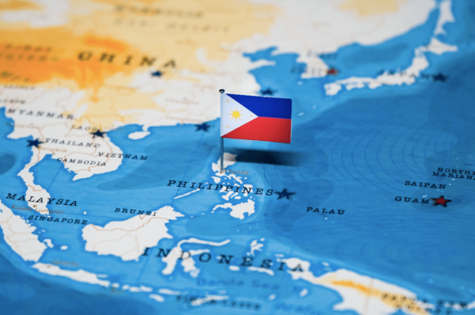
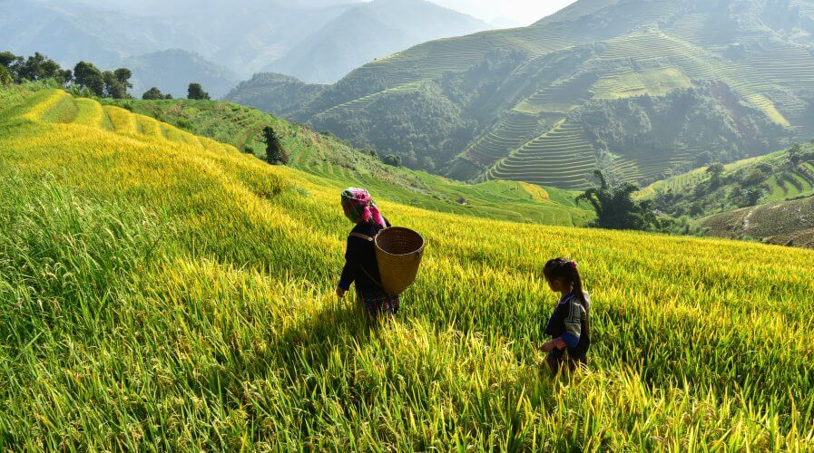
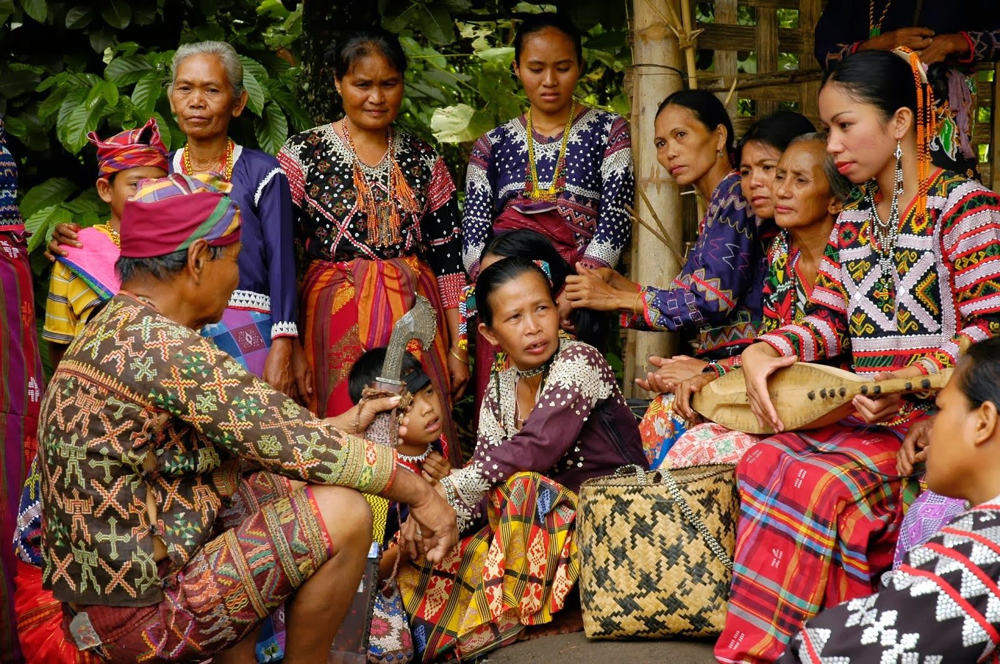
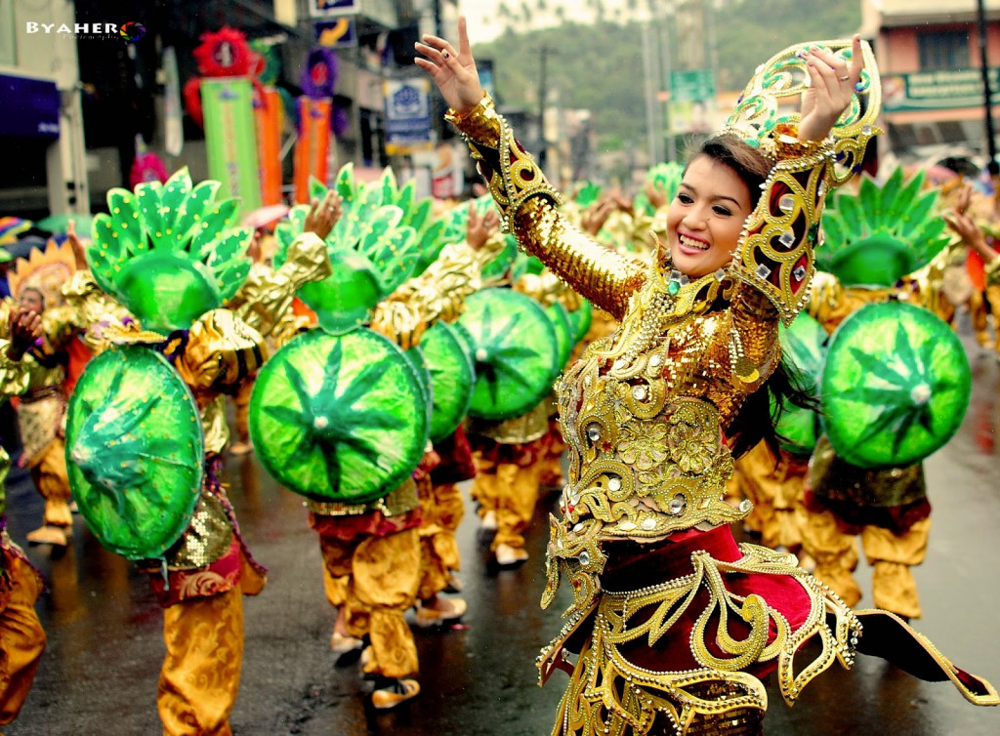

Philippines
Philippines, island country of Southeast Asia in the western Pacific Ocean. It is an archipelago consisting of more than 7,000 islands and islets lying about 500 miles (800 km) off the coast of Vietnam. Manila is the capital, but nearby Quezon City is the country’s most-populous city. Both are part of the National Capital Region (Metro Manila), located on Luzon, the largest island. The second largest island of the Philippines is Mindanao, in the southeast.
Volcanoes & National Parks, Philippines by STA Travel.
The Philippines takes its name from Philip II, who was king of Spain during the Spanish colonization of the islands in the 16th century. Because it was under Spanish rule for 333 years and under U.S. tutelage for a further 48 years, the Philippines has many cultural affinities with the West. It is, for example, the second most-populous Asian country (following India) with English as an official language and one of only two predominantly Roman Catholic countries in Asia (the other being East Timor). Despite the prominence of such Anglo-European cultural characteristics, the peoples of the Philippines are Asian in consciousness and aspiration.
Land
The Philippine archipelago is bounded by the Philippine Sea to the east, the Celebes Sea to the south, the Sulu Sea to the southwest, and the South China Sea to the west and north. The islands spread out in the shape of a triangle, with those south of Palawan, the Sulu Archipelago, and the island of Mindanao outlining (from west to east, respectively) its southern base and the Batan Islands to the north of Luzon forming its apex.
Historically, the total number of islands in the archipelago was held to be 7,107, but in 2016 the National Mapping and Resource Information Authority of the Philippines announced the discovery of more than 500 previously uncharted islands. The archipelago stretches about 1,150 miles (1,850 km) from north to south, and its widest east-west extent, at its southern base, is some 700 miles (1,130 km).
The island of Taiwan lies north of the Batan group, the Malaysian portion of the island of Borneo is to the south of Palawan, and the eastern islands of Indonesia lie to the south and southeast of Mindanao. Only about two-fifths of the islands and islets have names, and only some 350 have areas of 1 square mile (2.6 square km) or more. The large islands fall into three groups: (1) the Luzon group in the north and west, consisting of Luzon, Mindoro, and Palawan, (2) the Visayas group in the centre, consisting of Bohol, Cebu, Leyte, Masbate, Negros, Panay, and Samar, and (3) Mindanao in the south.
Soils
The alluvial plains and terraces of Luzon and Mindoro have dark black cracking clays, as well as younger soils that are especially suitable for rice cultivation. Much of the land of the hilly and mountainous regions consists of moist, fertile soils, often with a significant concentration of volcanic ash, that support fruit trees and pineapples.
Oil palms, vegetables, and other crops are grown in the peatlike areas, as well as in the younger, sand-based soils of the coastal plains, marshes, and lake regions. The dark, organic, mineral-rich soils of the undulating terrain of the Bicol Peninsula, much of the Visayas, and the northwest tip of Luzon are used to grow coffee, bananas, and other crops.
Highly weathered, often red or yellow soils are prominent in the central and southern Philippines and are typically planted with cassava (manioc) and sugarcane; these soils also support forests for timber harvesting. The poor, precipitation-leached soils of Palawan and the eastern mountains of Luzon are largely covered with shrubs, bushes, and other secondary growth that typically emerges in areas that have been cleared of their original forest cover.
Climate
The climate of the Philippines is tropical and strongly monsoonal (i.e., wet-dry). In general, rain-bearing winds blow from the southwest from approximately May to October, and drier winds come from the northeast from November to February. Thus, temperatures remain relatively constant from north to south during the year, and seasons consist of periods of wet and dry.
People
Ethnic Groups
The ethnically diverse people of the Philippines collectively are called Filipinos. The ancestors of the vast majority of the population were of Malay descent and came from the Southeast Asian mainland as well as from what is now Indonesia.
Other prominent groups include the Ilocano of northern Luzon and the Hiligaynon (Ilongo) of the Visayan islands of Panay and Negros, comprising roughly one-tenth of the population each. The Waray-Waray of the islands of Samar and Leyte in the Visayas and the Bicol (Bikol) of the Bicol Peninsula together account for another one-tenth. Filipino mestizos and the Kapampangans (Pampango) of south-central Luzon each make up small proportions of the population.
 Languages
Estimates of the total number of native languages and dialects spoken in the Philippines differ, but scholarly studies suggest that there are some 150. Most of the country’s languages are closely related, belonging to one of several subfamilies of Austronesian—more specifically, Western Malayo-Polynesian—languages. The major languages of the country generally correspond to the largest ethnic groups.
Tagalog is the most widespread language of the Central Philippine subfamily, with the bulk of its native speakers concentrated in Manila, central and south-central Luzon, and the islands of Mindoro and Marinduque. The national language of the Philippines, Pilipino (also called Filipino), is based on Tagalog and shares a place with English (the lingua franca) as an official language and medium of instruction.
Tagalog (including Pilipino) has the most extensive written literature of all Philippine languages. Cebuano, also a Central Philippine language, is used widely in Cebu, Bohol, eastern Negros, western Leyte, and parts of Mindanao. Ilocano is the most commonly spoken language of the Northern Luzon subfamily, and its speakers constitute the third largest language community of the Philippines.
Travel with us now!
The Philippines is situated in the western Pacific Ocean, and consists of about 7,640 islands, that are broadly categorized under three main geographical divisions from north to south: Luzon, Visayas, and Mindanao.
Hover above the 3 geographical divisions, click, and you'll be redirected to a page with our chosen destinations for each island.